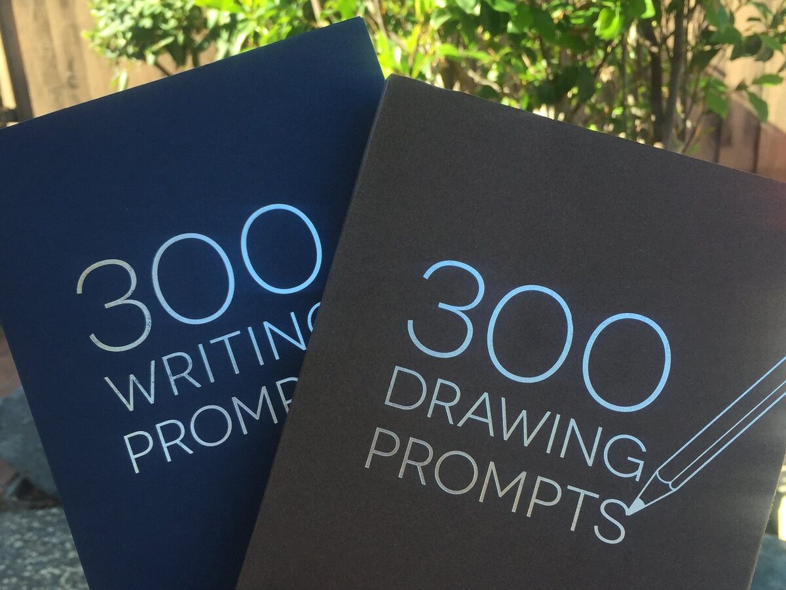
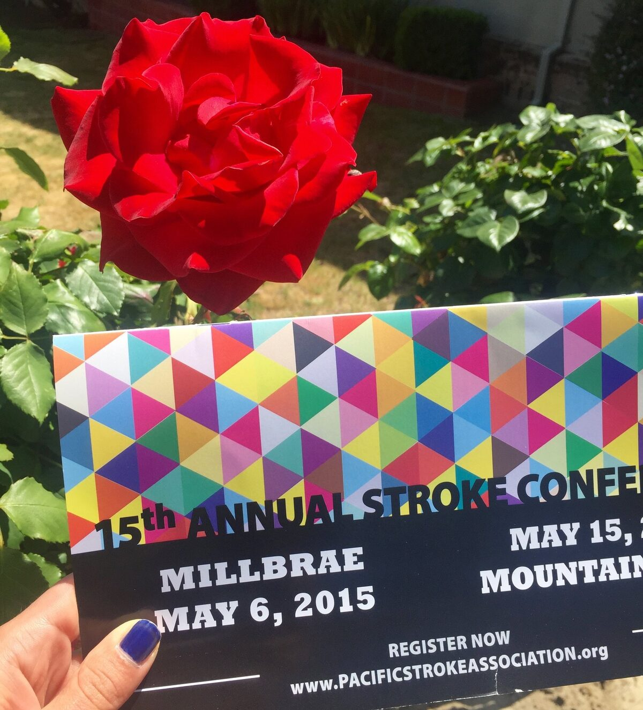
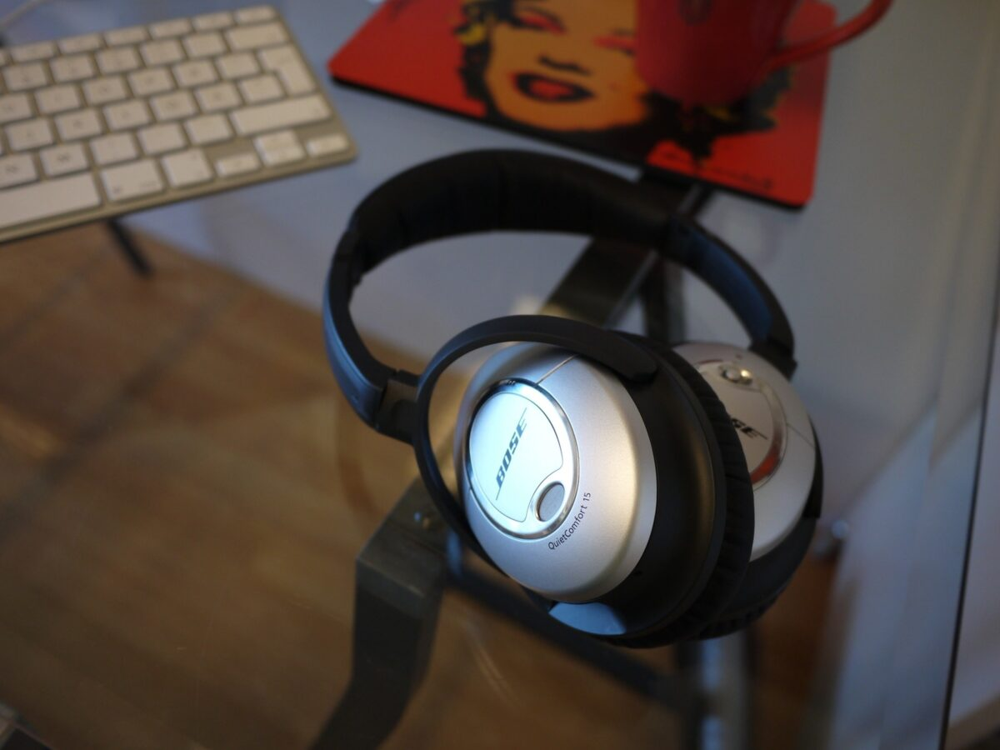

Blog
All The Things I Love About Speech Therapy With Adults

Draw and write, it's good for you! Browsing one of my favourite places on earth - the bookstore - generates yet another inspiring resource for therapy!
This one is for the caregivers Today was day 1 of a great conference, the 15th annual PSA Regional Stroke Conference. First of all, the conference took place at The Magnolia of Millbrae which I thought was an awesome venue for this crowd.
Everyday noise, noise everywhere. Are you at home reading this? Stop for a minute and listen. What do you hear? Is it quiet and peaceful? Just the TV from the other room and maybe the dishwasher doing its stuff? Or just the AC blasting?